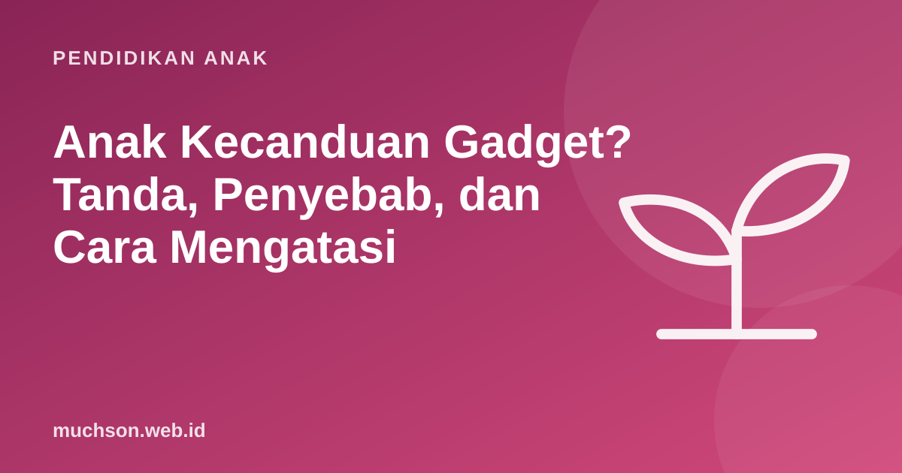

Beranda › Artikel › Pendidikan Anak
Pendidikan AnakAnak Kecanduan Gadget? Tanda, Penyebab, dan Cara Mengatasi
Anak menangis keras saat HP diambil, makan harus sambil menonton, dan tidak tertarik bermain di luar. Banyak orang tua menyebutnya kecanduan gadget. Kadang memang perlu perhatian serius, kadang yang terjadi adalah kebiasaan yang bisa diubah. Artikel ini membantu membedakannya, lalu memberi langkah bertahap yang realistis.

Kebiasaan berat vs gangguan
Organisasi Kesehatan Dunia (WHO) memasukkan gaming disorder dalam klasifikasi penyakit ICD-11. Kriterianya ketat: kendali atas bermain game melemah, game makin diprioritaskan di atas kegiatan dan minat lain, dan terus berlanjut meski menimbulkan akibat buruk. Pola ini harus cukup berat sampai mengganggu kehidupan pribadi, keluarga, sosial, atau sekolah, dan biasanya tampak setidaknya selama 12 bulan. WHO juga menegaskan bahwa gangguan ini hanya dialami sebagian kecil orang yang bermain game.
Sebagian besar anak yang "susah lepas dari HP" mengalami kebiasaan berat, bukan gangguan klinis. Kabar baiknya, kebiasaan bisa diubah dengan struktur dan konsistensi. Yang klinis perlu bantuan profesional.
| Kebiasaan berat | Perlu perhatian profesional |
|---|---|
| Rewel saat waktu layar habis, tapi bisa ditenangkan | Marah ekstrem atau agresif berulang setiap dibatasi |
| Masih mau bermain, sekolah, dan berteman | Menarik diri dari teman, keluarga, dan kegiatan lain |
| Tidur kadang mundur | Pola tidur kacau terus-menerus |
| Nilai sekolah masih stabil | Prestasi menurun tajam, sering bolos atau menolak sekolah |
| Berlangsung beberapa minggu | Berlangsung berbulan-bulan dan makin parah |
Kenapa gadget begitu menarik bagi anak?
- Dirancang untuk menahan perhatian. Video yang berputar otomatis, gulir tanpa akhir, dan hadiah acak membuat sulit berhenti, bahkan bagi orang dewasa.
- Tidak ada titik selesai. Buku punya halaman terakhir; banyak aplikasi tidak.
- Pelarian dari rasa bosan atau cemas. Gadget menjadi cara cepat mengatur emosi.
- Kebutuhan sosial. Teman-temannya ada di game atau grup yang sama.
- Contoh di rumah. Anak meniru kebiasaan orang dewasa di sekitarnya.
Langkah bertahap mengurangi gadget
- Amati tanpa menghakimi. Catat seminggu: jam berapa, berapa lama, aplikasi apa, dan apa yang terjadi sebelumnya (bosan, lelah, sendirian?).
- Mulai dari satu aturan. Misalnya tidak ada gawai di meja makan. Konsisten seminggu, baru tambah aturan lain.
- Beri peringatan sebelum berhenti. "Lima menit lagi" membantu transisi. Pewaktu yang terlihat lebih adil daripada "sudah!" mendadak.
- Siapkan pengganti yang menarik. Kotak kegiatan berisi lego, buku komik, bahan prakarya, atau permainan papan.
- Ubah jenis layar, tidak hanya durasinya. Geser sebagian waktu layar ke kegiatan mencipta.
- Jauhkan gawai dari kamar tidur di malam hari. Ini salah satu aturan paling berdampak.
- Jadi contoh. Taruh HP Anda juga saat makan dan bermain bersama anak.
Kalimat yang membantu saat anak marah
| Daripada | Coba |
|---|---|
| "Kamu ini kecanduan!" | "Mama lihat susah sekali berhenti ya. Itu wajar, aplikasinya dibuat supaya kita betah." |
| "Pokoknya tidak boleh!" | "Kita sudah sepakat 1 jam. Besok boleh lagi sesuai jadwal." |
| Mengambil HP tiba-tiba | "Lima menit lagi ya, mama pasang pewaktunya." |
| Mengancam hukuman besar | Konsekuensi kecil yang sudah disepakati dan dijalankan dengan tenang |
Kemarahan anak saat batas diterapkan biasanya mereda dalam beberapa hari jika aturannya konsisten. Yang membuatnya bertahan lama justru aturan yang kadang ditegakkan, kadang tidak.
Kapan perlu bantuan profesional?
- Penggunaan gawai sudah mengganggu sekolah, tidur, dan hubungan selama berbulan-bulan.
- Anak menunjukkan kemarahan ekstrem, menyakiti diri, atau mengancam orang lain saat dibatasi.
- Ada tanda kecemasan, depresi, atau perundungan daring di balik penggunaannya.
- Upaya keluarga yang konsisten selama beberapa minggu tidak membawa perubahan.
Dokter anak, psikolog anak, atau layanan kesehatan jiwa di puskesmas dan rumah sakit bisa menjadi langkah pertama. Mencari bantuan bukan tanda gagal sebagai orang tua.
Ganti konsumsi dengan kreasi
Salah satu pengganti yang efektif untuk anak yang sangat menyukai game adalah mengajaknya membuat game sendiri. Energi dan minatnya tetap tersalurkan, tetapi dalam bentuk yang melatih logika dan kesabaran. Anak bisa memulai dengan dua pelajaran coding gratis di PixelKode, yang tiap pelajarannya punya awal dan akhir yang jelas.
Tanya jawab
Apa tanda anak kecanduan gadget?
Apakah kecanduan game termasuk penyakit?
Bagaimana mengurangi gadget tanpa anak mengamuk?
Kapan harus ke psikolog?
Sumber dan bacaan lanjut
- WHO: Addictive behaviours: Gaming disorder (tanya jawab)
- WHO: Gaming disorder, ICD-11 FAQ
- AAP (2016). Media Use in School-Aged Children and Adolescents
- AAP Family Media Plan